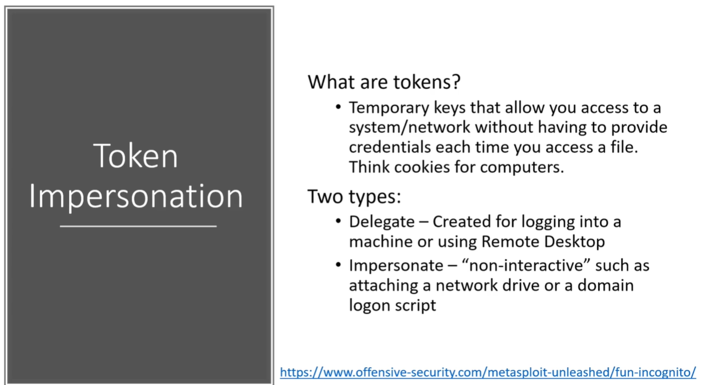

So what are tokens ?_?
U could think of tokens basically as cookies for your computers.
They are these temporary keys allows you access to a system or network without actually having to provide your credentials.



We got a shell in meterpreter and loaded a tool called Incognito and list our tokens.
Will going to use Mimi Katz which is powershell script that is trying to dump hashes.


When it came's down to moving laterally and there's always potential difference in a new machine.
From one machine we were Frank Castle and there's nothing great we passed that password.
And we get onto machine two (i.e. Spider Man) and there is the administrator just sitting there with a token and then we imperosnate that token and then we are now a domain administrator.